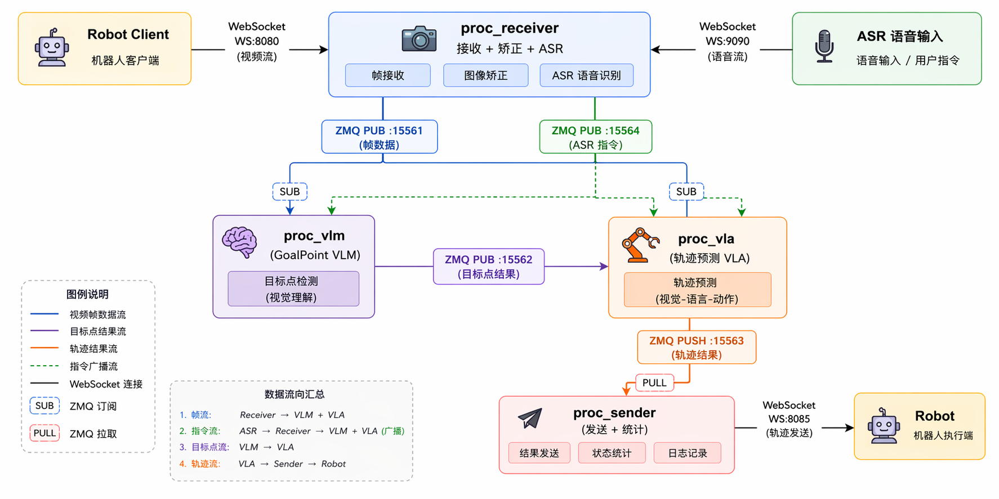
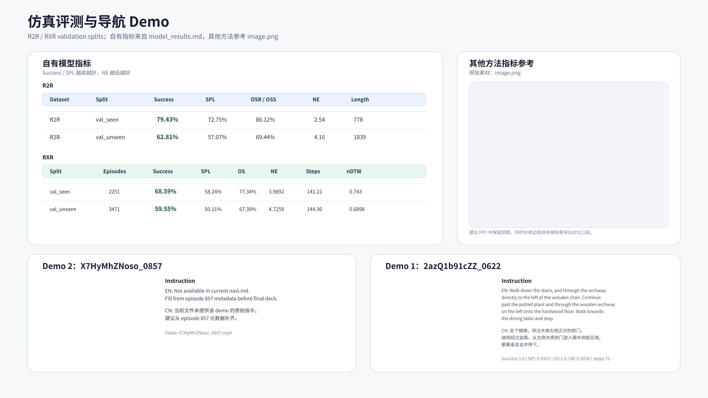

自驾、物流、仿真与真机数据统一接入，自动拆分、校验、标注和打包。
JD EXPLORE ACADEMY · EMBODIED AI INTERNSHIP
把导航模型，
把导航模型，
真正接到机器人上。
围绕真实机器人导航，打通从多源数据生产、模型训练评测，到端云推理与控制执行的完整闭环。
ONLINE NAVIGATIONCONNECTED
GOAL
VOICE→VLM→VLA→ROBOT
1M+导航 / VLA 样本
≈ 5×数据生产效率
≈ 90 ms常态通信延时
80%+园区场景导航 SR
01 / OVERVIEW
不是单点 Demo，而是一条可迭代的系统链路
数据决定模型上限，评测负责发现边界，真机闭环检验系统是否真正可用。
复现并部署多类 VLN/VLA baseline，以标准指标和场景集分析泛化能力。
语音指令、视觉观测、目标点和连续轨迹在异步链路中稳定流转。
把网络抖动、控制滞后和失败轨迹重新转化为数据与评测用例。
简历中的三项工作多模态具身数据标注 Pipeline算法真机部署与 Sim2Real全链路真机推理闭环开发
02 / REAL ROBOT
真机链路：语音到轨迹的异步闭环
将感知、慢思考与快执行拆成独立进程，通过清晰的数据契约降低耦合。

语音接入
ROS2 音频接入、VAD 切分与 FunASR 识别；通过容错词库和状态累加处理口误、长停顿与碎片化语音。
观测上行
客户端以固定频率发送 RGB 与机器人状态；服务端完成图像解码、矫正和时间戳校准。
分层推理
VLM 结合指令与历史帧预测 Goal Point，VLA 将当前视觉、状态和目标转成连续轨迹。
控制执行
轨迹经二进制协议返回机器人，利用发送时刻锚点、轨迹重采样和定频控制减少执行滞后。
SYSTEM PROFILING
先测清瓶颈，再优化链路
只看平均延时会掩盖真实问题，因此同时记录吞吐、分位数、长尾与模块级资源占用。
统一输入尺寸后，相比原始分辨率的 1.66 Hz 提升约 7.1×。
历史视觉和长 Prompt 带来主要推理开销，是在线系统的慢模块。
接收端基本跟上 5 Hz 目标，说明常态视频上行与解码链路可用。
40.23 msUplink p50
102.67 msUplink mean
949.85 msUplink p99
工程结论：常态通信约 90–100 ms，但网络存在明显长尾；稳定闭环必须同时处理模型吞吐与网络抖动，不能只优化平均值。
03 / EVALUATION
模型评测：从排行榜到真机预筛
Habitat 给出统一可比指标；连续真实观测评测提前暴露轨迹漂移、转向突变和避障失败。
R2R · VAL SEEN79.43%Success · SPL 72.75%
R2R · VAL UNSEEN62.81%Success · NE 4.16
RxR · VAL SEEN68.59%Success · SPL 58.24%
RxR · VAL UNSEEN59.55%Success · NE 4.73

无遮挡点到点
覆盖正前、左右 30° / 60° 目标，检查是否能边走边转，而非原地旋转后直行。
静态障碍绕行
墙、隔断、行人、纸箱等不同尺度障碍，评估平滑绕行与目标保持能力。
动态横穿
左右双向移动障碍，检查轨迹能否及时让行并回到原目标方向。
S 型指令跟随
长距离连续曲率变化，观察多帧轨迹的一致性与控制可执行性。
04 / DATA ENGINE
数据引擎：从原始 MCAP 到训练样本
核心不是“多写几个脚本”，而是用稳定阶段、数据契约和质量门禁，让不同来源的数据可复用、可追溯、可扩展。
M1ParseMCAP / ROSBag
多模态 Topic
→
多模态 Topic
M2Calibrate去畸变
内外参归一
→
内外参归一
M3Quality Gate完整性
时间覆盖
→
时间覆盖
M4–M5Build Clips0.2 s 采样
未来 10 s
→
未来 10 s
M6Fast Labels轨迹 / 速度
Stop / Mask
→
Stop / Mask
M8–M9PublishPack
Caption 回填
Caption 回填
几何与状态驱动的自动标注
从状态、未来 waypoint、yaw 与参考路径自动计算 ego 坐标系下的轨迹、速度、有效掩码和停止标签，避免逐样本人工标注。
- 未来轨迹与 refer path 按弧长重采样
- 相机标定完成 3D → 像素投影
- Label validity 与 QA 结果贯穿下游
异构数据统一成共享样本层
自驾、物流、仿真与真机数据保留原始来源，通过轻量引用和统一 schema 构建训练视图，避免复制重型图像与点云。
- Raw-first：原始 MCAP 永不覆盖
- Schema-first：模块边界可独立迭代
- Caption 按时间戳自动回填到样本
把数据性能问题变成可定位问题
真机数据加载曾因每个 sample 重扫并排序图像目录，单样本耗时达到秒级；通过缓存与校验开关消除重复 I/O。
- 定位多机多卡评测不同步问题
- 修复小验证集只输出单张可视化
- 维护黄金 Session 与阶段报告
1M+累计高质量导航 / VLA 样本
≈5×相对纯人工流程的数据生产效率
人工引导负责定义任务，程序化规则与 VLM 完成初标，QA 与专家抽检负责质量收口。
05 / DEMOS
导航 Demo：模型能否完成完整指令
视频展示连续决策过程，而不是只展示最终成功帧。
HABITAT · SUCCESS
长指令与跨区域导航
下楼、穿过拱门、绕过家具并在目标区域停止。
- Success
- 1.0
- SPL
- 0.9501
- Steps
- 73
HABITAT · NAVIGATION
多转向长程执行
持续融合当前视野与历史观察，在长时序中更新局部方向。
- Input
- RGB + Text
- Mode
- VLN
- Output
- Trajectory
06 / TAKEAWAY
这段实习让我重新理解“模型落地”
机器人导航不是一个模型问题，而是数据、算法、通信与控制共同决定的系统问题。
数据需要稳定契约，而不只是更多样本。
评测需要复现失败，而不只是报告平均分。
部署需要关注长尾，而不只是最好延时。
闭环需要动作可执行，而不只是视觉上合理。